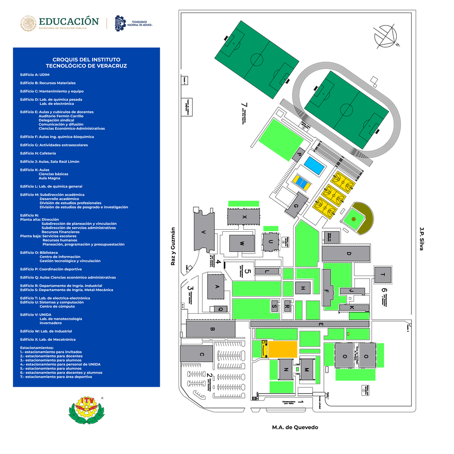

Coordinación de Tutorías — Ingeniería en Sistemas Computacionales
Programa Institucional de Tutorías
Acompañamiento académico y personal para estudiantes de
Ingeniería en Sistemas Computacionales.
Apoyo personalizado en materias del plan de estudios de Ingeniería en Sistemas.
Guía para la toma de decisiones en tu trayectoria académica y profesional.
Control y seguimiento del avance en créditos complementarios del programa.
Atención integral para mejorar el rendimiento y bienestar del estudiante.
Desarrollo de técnicas de aprendizaje, administración del tiempo y organización.
Apoyo en la definición de metas académicas, personales y profesionales.
El tutor orienta al estudiante hacia las áreas de apoyo institucional que necesite.
Sesiones a distancia mediante plataformas digitales institucionales.
La tutoría es un proceso de acompañamiento académico y personal que se brinda a los estudiantes durante su estancia en el Instituto Tecnológico. Su objetivo es apoyar al alumno en su desarrollo académico, personal y profesional, así como orientarlo para mejorar su desempeño escolar y favorecer su formación integral.
El programa ofrece diferentes modalidades de atención para adaptarse a las necesidades de cada estudiante.
Reunión directa entre tutor y estudiante para tratar temas académicos o personales de forma privada y enfocada.
Sesiones con un grupo de estudiantes para orientación académica colectiva y desarrollo de habilidades compartidas.
Apoyo institucional adicional: orientación educativa, servicios médicos, apoyo psicológico, becas y bolsa de trabajo.

El programa de tutorías es gratuito y está disponible para todos los estudiantes de Ingeniería en Sistemas. No esperes a reprobar para pedir apoyo.
Para obtener los créditos complementarios del programa de tutorías es necesario acreditar ambas etapas.
Acredita la primera etapa del programa durante el primer semestre de tu carrera.
Acredita la segunda etapa para completar el ciclo de acompañamiento del programa.
Acreditación de créditos complementarios.
Importante: Solo cuando ambas tutorías (I y II) son acreditadas se otorgan los 2 créditos complementarios. Si el estudiante no acredita alguna de las dos, NO se otorgan créditos.
Los estudiantes que hayan acreditado Tutoría I y Tutoría II podrán descargar su constancia oficial firmada digitalmente ingresando su número de control.
Además del programa institucional de tutorías, el Departamento de Sistemas cuenta con programas de asesoría operados por alumnos y docentes para reforzar tu aprendizaje.
Un programa donde estudiantes de semestres avanzados brindan asesoría a sus compañeros en materias del plan de estudios. Aprende de quienes ya pasaron por lo mismo.
Programa de refuerzo académico enfocado en las materias del área de sistemas. Sesiones estructuradas para fortalecer los conocimientos del estudiante.
Conoce a los docentes asignados como tutores.
Responsable de la coordinación del programa institucional de tutorías del Departamento de Sistemas y Computación. Primer punto de contacto para dudas sobre el programa.
Docente adscrito al Departamento de Sistemas.
Docente adscrito al Departamento de Sistemas.
Docente adscrito al Departamento de Sistemas.
El Instituto Tecnológico cuenta con servicio médico disponible para todos los estudiantes inscritos.
Atención médica general para estudiantes durante el horario escolar. Sin costo para alumnos inscritos.
Atención inmediata en caso de accidente o emergencia dentro de las instalaciones del instituto.
Lunes a viernes de 8:00 a 15:00 hrs. Ubicado en el edificio E detras del departamento de comunicación, a un costado del sombreadero.

Copyright © 2026 Coordinación de Tutorías ISC.
Todos los derechos reservados.
By: yairctt